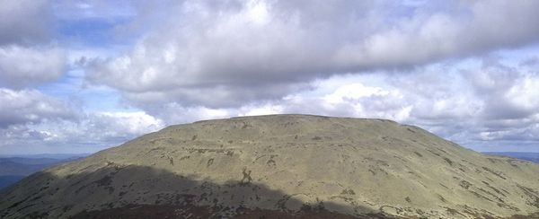

С 2009 года Правление Межрегиональной патриотической общественной организации «Собор» стало задаваться вопросом расширения экспедиционно-туристической деятельности коллектива, преследуя цель повышения прикладных навыков ориентирования и борьбы за выживание на лоне дикой природы. Так в конце лета 2009 года возникла идея экспедиции на господствующую вершину южной оконечности Рифейских гор - Яман-Тау, которая находится в самом сердце Южно-Уральского Государственного Природного Заповедника.
В 2010 году туристическая программа МПОО «Собор» была нацелена на подготовку личного состава к восхождению на Яман-Тау. Мы организовали целый ряд походов и экспедиций в горны Южного Урала. Здесь нужно сделать небольшое терминологическое уточнение, показав существенную разницу между понятиями «поход» и «экспедиция». В словаре Ожегова С.И. этим терминам дается следующее определение:
1. Поход – это организованное путешествие или дальняя прогулка, а также вообще совместное движение группы лиц с какой-нибудь определенной целью;
2. Экспедиция - поездка группы лиц, отряда с каким-либо специальным заданием.
Итак, мы понимаем под «походом» туристическое путешествие организованной группы по заранее определенному маршруту, а под «экспедицией» четко запланированную поездку отряда участников нашей Организации в труднодоступные и незаселенные природные районы для решения конкретных задач. Например: рекогносцировка горных массивов и лесов, на которых еще не были участники "Собора".
Имея представление о целях экспедиции на Яман-Тау и трудностях продвижения по территории Южно-Уральского Заповедника, Правление "Собора" провело исследование психофизической готовности участников «Собора», претендующих на участие в этом знаковом для всех нас туристическом мероприятии. По итогам проведенного анализа была сформирована программа подготовки личного состава, развернутая в августе 2010 года. Разумеется, мы не упустили из внимания необходимость внести соответствующие изменения в командное и личное снаряжение. Сегодня, когда за плечами авангарда коллектива «Собора» уже остался успешный штурм Яман-Тау, можно сказать, что все приготовления оказались своевременными и конструктивными.
День первый
23 августа 2010 года
В 6.00 утра 23 августа состоящая из девяти человек группа "Собора" на микроавтобусе «Газель» выдвинулась в поселок Отнурок Белорецкого района Башкирии, что в 120 километрах от Магнитогорска. Экспедиция прибыла в поселок Отнурок по грунтовой дороге из Белорецка в 8.15 утра. Группа вышла на маршрут в 8.30, так как пятнадцать минут ушло на подготовку снаряжения, предварительное ориентирование на местности и построение личного состава, на котором главой экспедиции были озвучены контрольные точки и административная структура управления личным составом. Отряд из девяти человек был поделен на три административных тройки, которые возглавили глава группы и два его заместителя.
В 9.40 утра экспедиционная группа повернула с грунтовой дороги, ведущей от поселка Отнурок на Северо-Запад заповедника, взяв курс четко на север вдоль хребта Аурсяк в направлении реки Большой Инзер. Сначала путь проходил по лесистому ущелью, где в изобилии встречались обросшие мхом скалы. Но час от часу все чаще стали попадаться разломы горной породы – курумники. И чем ближе экспедиция подходила к хребту, преграждающему маршрут к Большому Инзеру, тем чаще встречались эти «каменные реки». Когда же группа приблизилась к горе Маярдак (1225 метров над уровнем моря) на расстояние прямой видимости, то перед взорами участников экспедиции «Собора» возникло нечто потрясающее воображение – многокилометровое «каменное поле» курумника, простирающееся на восток и север ровно столько, сколько видели глаза. С северо-запада это трудное для туристов скальное препятствие было отсечено заросшей хвоей горой, рассыпающейся на отдельные скальные фрагменты и тем самым рождающей сами курумники, лежащие у ее подножия. После двадцати-тридцати минут рискованного перехода через «каменное поле» белоснежных разломов камня у подножия Маярдака хлынул ливень и задул шквалистый ветер. Опасность совершить неверный шаг, потерять равновесие и разбиться об глыбы курумника резко возросла. Поэтому личному составу пришлось мобилизовать все силы и на пределе возможностей взять полуторачасовым маршем сначала сам курумник, а потом и Маярдак.
В 14.30 экспедиция достигла одной из вершин хребта Аурсяк, где остановилась на короткий привал, чтобы согреться у костра и приготовить пищу на обед. Изначально, организаторами исключалась возможность разведения костров в заповеднике, но экстремальные погодные условия не дали ограничиться использованием газовой горелки, входящей в командное снаряжение. Оперативно пообедав и немного согревшись насквозь промокший отряд продолжил путь.
В 16.00 мы начали спуск с хребта Аурсяк на север в направлении горной реки Большой Инзер. Спустя полтора часа, крутой спуск с горы начал становиться более пологим: на смену скальным обвалам пришли топкие ручьи и заболоченные поляны, в которых ноги тонули по самое колено. Преодолев очередное болото на склоне Маярдака, в 18.00 Соборная команда с большим облегчением и радостью прорвалась через бурелом к полноводному от обильных ливней Большому Инзеру.
Перед переходом реки вброд глава экспедиции организовал построение, снабдил личный состав инструкциями по переходу горного потока и выразил благодарность за стойкость. Мы благополучно переправились на северный берег Большого Инзера и продолжили движение в сторону южного склона горы Шикташ (1261 метр над уровнем моря). Пройдя топи Большого Инзера, мы вошли в лес, где к 19.00 перешли реку Малый Калпак, а через час продолжили путь вдоль реки Калпак. Ливень не унимался все это время.
В 21.00 из-за тумана и дождя было слишком темно для продолжения безопасного движения, поэтому глава группы дал указание разбить лагерь. Участники отряда установили палатки и развели костер у самого русла реки Калпак, из которой мы набрали воду для приготовления ужина.
Нужно, сказать, что к этому времени группа страдала от переохлаждения и была поставлена перед весьма неприятным фактом того, что промокла не только верхняя одежда и личное снаряжение, но и давшие течь влагостойкие рюкзаки. Поэтому пропитались влагой все спальные мешки, а это обещало холодную ночь. Было только одно исключение, которое многому научило остальных. Первый заместитель главы экспедиции, предусмотрительно вложил внутрь рюкзака полиэтиленовый мешок для строительного мусора на 240 литров, что сберегло его спальный мешок, личные вещи и все снаряжение от промокания. Из этого были сделаны соответствующие выводы.
Отряд, как это только было возможно, согрелся у костра и приготовился ко сну. Было принято решение разместить всех девятерых человек в одной четырехместной палатке типа «тоннель», а во вторую поместить часть промокшего снаряжения. Обогрев в палатке был организован с помощью туристической газовой горелки.
День второй
24 августа 2010 года
Общий подъем состоялся в 11.30 утра. За два с половиной часа были проведены все необходимые приготовления перед продолжением пути, личный состав пообедал, подготовил снаряжение и в 14.00 продолжил движение.
Около получаса группа двигалась вдоль реки Калпак в северном направлении, пока русло не начало поворачивать на запад, что шло вразрез с запланированным маршрутом. Далее экспедиция начала продвигалась по ущелью, параллельно предгорьям горы Шикташ. В 16.00 группа начала подъем на вершину Шикташа, высота которого составляет 1261 метр над уровнем моря.
С самого утра не прекращался проливной дождь, и чем выше поднималась группа, тем хуже становилась видимость и погодные условия. Ветер свистел в ушах, колыхая сочащуюся влагой траву и измученные грозой березы. Около 17.30 экспедиция «Собора» приблизилась к скалам на вершине горы Шикташ, продолжая следовать в северном направлении. Поднявшись на вершину, мы так и не смогли разглядеть в пепельном тумане желанных очертаний Яман-Тау и были вынуждены вслепую следовать далее по азимуту на север.
Перевал через кряж Шикташа оказался чрезвычайно рискованным: на обнаженных скалах царствовала гроза, сшибающая с ног ветром. Группа полчаса, цепляясь за холодные выступы отвесного курумника, пробиралась до поросшего лесом спуска с Шикташа.
В 19.00 экспедиция закончила наполненный опасностями спуск с Шикташа и, приближаясь к очередному полю курумника, заликовала вслед за главой отряда, который первым увидел на расстоянии нескольких километров отвесный склон царственного Яман-Тау. Сердца участников экспедиции в этот момент наполнились легкостью, ведь скрывавшийся с самого начала пути за грозовыми облаками монолит Яман-Тау, наконец, предстал перед нашими глазами во всей своей непостижимой нордической красоте.
В начале восьмого вечера, спустившись на курумник, соединяющий предгорья Шикташа и Яман-Тау, глава отряда организовал построение, подводящее черту под самым сложным этапом ориентирования. Проанализировав ситуацию, было принято решение отложить штурм высочайшей вершины Южного Урала на следующий день.
По ощущениям казалось, что до склона Ямана подать рукой, и лагерь будет разбит максимум через час, но путь занял почти два часа. Так что только в 21.00 отряд поставил палатки и развел костер.
День третий
25 августа 2010 года
Вторая ночь прошла несравненно приятнее, чем первая, так как сразу после выхода к подножью Ямана небо постепенно иссякло и прояснилось. Все мы сочли это за добрый знак.
Подъем был организован в 6.30 утра. Пробудившись, группа приступила к приготовлению завтрака и просушке снаряжения, но здесь нас ждал неприятный сюрприз. Первый заместитель главы экспедиции, который был ответственен за закупку провианта, приобрел помимо гречки и риса два килограмма перловки. Эта крупа чрезвычайно плохо разваривается и требует неоправданных затрат времени на приготовление. В общей сложности, на приготовление перловки ушло около двух часов.
Отсюда следует очевидный вывод: перловка категорически не подходит для приготовления в полевых условиях.
В 9.30 экспедиционный отряд «Собора» начала штурм Яман-Тау. Отвесные разломы скал и россыпи курумника, представляющие собой серьезные препятствия, преодолевались группой с легкостью благодаря полученному за первые два дня опыту.
Штурм Ямана проходил на одном дыхании. Отряд остановился на первый пятнадцатиминутный привал, достигнув высоты 1507 метров. Точную высоту мы смогли определить благодаря чугунной печати Государственного Управления Геодезии и Картографии, забетонированной в скальную породу.
Во время привала мы нашли ручей с ледяной горной водой, струящейся под курумниками восточного склона Яман-Тау. Пополнив запасы воды, экспедиция продолжила подъем. Командир принял решение взять штурмом оба пика Яман-Тау: малый и большой.
Поднявшись на пару десятков метров выше, группа была до глубины души удивлена открывшимся видом. Перед взорами всех участников экспедиции предстала сизая от обилья черники поляна. Мало кто мог предположить, что на высоте более полутора километров можно найти такое количество этой редкой в широтах Южного Урала ягоды. Насладившись заслуженным подарком Богов, мы продолжили штурм горы.
Взятие малого пика Ямана стало генеральной репетицией перед решающим рывком на заветное плато Большого Яман-Тау. Ровно в 13.30 25 августа 2010 года экспедиция «Собора» успешно завершила штурм Малого Яман-Тау и провела торжественное построение на его пике.
Проведя рекогносцировку вершины малого пика Ямана, экспедиция начала спуск к уздечке между двумя пиками горы. Этот спуск оказался незабываемым для всех, потому что весь этот отрезок пути был наполнен неистовым ветром, сбивающим с ног и безжалостно бьющим в лицо.
На снимках со спутника в Google Maps фигурировала тропа, ведущая с седловины горы на плато Большого Яман-Тау. Как выяснилось при ближайшем рассмотрении то, что наши предшественники называли тропой, оказалось остатками подземных коммуникаций. Сама же псевдо тропа образовалась вследствии серии взрывов горной породы. В пользу этого говорят не только раздробленные скалы, но и остатки саперных шнуров и катушек, разбросанные толстостенные трубы и прочие металлоконструкции.
Кульминацией стал штурм Большого Яман-Тау, который длился почти час и закончился в 16.00. Именно в четыре часа по полудню экспедиционная группа межрегиональной общественной организации «Собор» покорила высочайший пик Южного Урала – гору Большой Яман-Тау, находящуюся на высоте 1640 метров над уровнем моря в Южно-Уральском Государственном Природном Заповеднике.
Покорив вершину, экспедиция провела рекогносцировку местности и разместила символику «Собора» на осколках скал и вертолетной площадке ныне разрушенного опорного пункта Министерства Обороны СССР, развалины которого покрывают все плато вершины Яман-Тау. Теперь надпись «ФСБ ВИДИТ ВАС!», выложенная камнями и осколками кирпичей на вертолетной площадке Ямана соседствует с гордым именем нашей Организации. В непосредственной близости от вертолетной площадки группа установила Соборный символ, представляющий собой полутораметровый спил сухой сосны с нанесенным на верхний срез символом Соборности. Нужно отдать должное второму заместителю главы экспедиционного отряда, который поднял этот полновесный символ на Яман-Тау с места ночной стоянки, прикрепив спил сосны к своему многострадальному рюкзаку.
Отряд разведал местность, провел фото/видео съемку местности, насладился грандиозными видами Рифейских гор и небольшого закрытого военного городка Межгорье, лежащего у западного подножья Яман-Тау. В 17.00 глава Соборной экспедиции объявил построение личного состава на вертолетной площадке и обратился с речью к соратникам. Отряду была объявлена благодарность за проявленное мужество и решение главной задачи экспедиции - покорение Яман-Тау. Закончив свою речь, командир в торжественной обстановке, под внимательными взглядами соратников, повязал алую ленту на Соборный символ, который на небывалую доселе высоту поднял дух Соборности нашего коллектива.
Ровно в 17.30 отряд «Собора» направился в восточным направлении через лесистый склон Ямана к хребту Машак, с севера на юг которого проложена ЛЭП. Долгий и опасный путь по склону Яман-Тау, курумникам и дремучему лесу продолжался до полуночи и завершился в темноте, расщепляемой лучами фонарей. Дойдя до ЛЭП отряд, разбил лагерь и остановился на ночь.
День четвертый
26 августа 2010 года
Подъем был организован в начале десятого утра, после чегобыло убрано снаряжение и роздан сухой паек. В 10.20 экспедиция начала ударными темпами продвигаться на юг в сторону поселка Отнурок и города Белорецк. Дообеденный переход запомнился всем не только проливным дождем и непроходимой болотной травой вдоль ЛЭП, но и лосенком, который неспешно, ничего не опасаясь, пересек ЛЭП, порадовав всех свои видом.
На обед мы остановились в 14.15 прямо посреди дороги, пробившейся из леса на просеку ЛЭП. Через час глава экспедиции организовал построение, на котором разбил отряд из девяти человек на две подгруппы: четыре и пять человек соответственно. Связь между группами осуществлялась по рациям.
В первую подгруппу входила наиболее сильная административная тройка во главе с командиром и его вторым заместителем. Задачей первой подгруппы являлось оперативно достичь населенного пункта Отнурок, выйти на связь с водителем Газели и согласовать время отъезда отряда на 21.00.
Второй подгруппе вменялось в обязанности продолжать движение в южном направлении в сторону поселка Отнурок. Главой этой административной единицы был назначен первый заместитель командира.
Первая подгруппа достигла Отнурка в 18.30, покрыв за все время дневного перехода около 26 километров. Вторая подгруппа прибыла с часовым опозданием.
Согласовав вопрос с транспортом, командир и участники первой подгруппы приобрели в Отнурке свежее молоко и хлеб, чтобы поужинать самим и оставить еды для догоняющих соратников, которые по достоинству оценили проявленную заботу.
После прибытия второй подгруппы в 19.30 не прошло и получаса, как появилась Газель, на которой экспедиционный отряд должен был возвращаться в Челябинскую область. Закончив молочную трапезу, отряд провел построение, на котором была поставлена гордая точка экспедиции МПОО «Собор» на Яман-Тау, прошедшей с 23 по 26 августа 2010 года.
В 20.20 соратники закончили погрузку снаряжения в Газель, заняли свои места и с ветерком помчались в Магнитогорск.
Барсуков Григорий Владимирович (Глава экспедиции МПОО «Собор» на Яман-Тау)
Фотоотчет экспедиции МПОО "Собор" на Яман-Тау